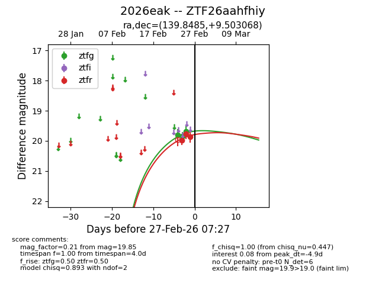
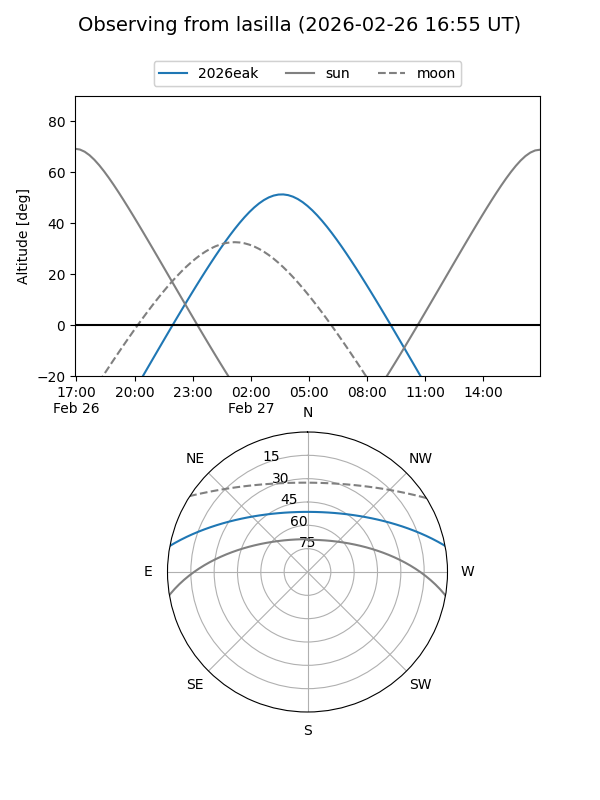
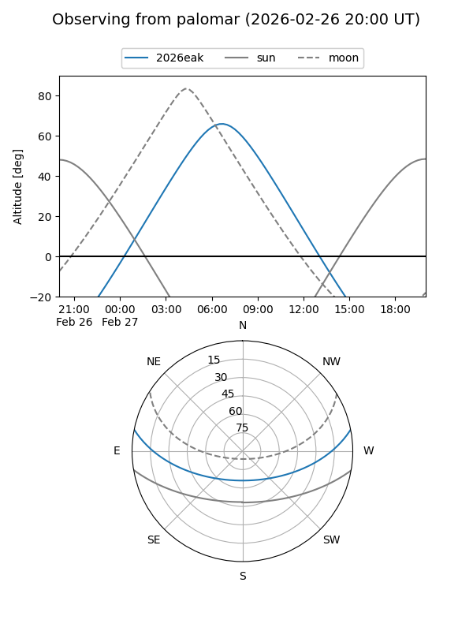
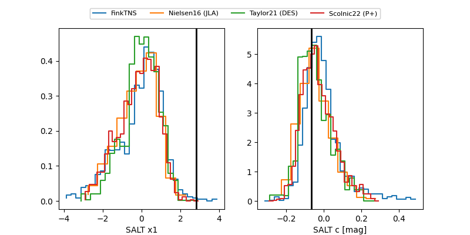

2026eak
Target 2026eak at 2026-02-27 07:28
Aliases and brokers:
FINK: link
Lasair: link
ALeRCE: link
TNS: link
YSE: link
alt names
ZTF26aahfhiy (ztf,fink_ztf)
2026eak (tns,yse)
Coordinates:
equatorial (ra, dec) = 139.8485,+9.50307
equatorial (HMS+DMS) = 09:19:23.64,+09:30:11.05
galactic (l, b) = (221.8519,+37.11427)
Flags:
Photometry:
last ztfg=19.69, ztfr=19.85
3 ztfg, 3 ztfr detections
Lightcurve

Visibility


Additional plots
